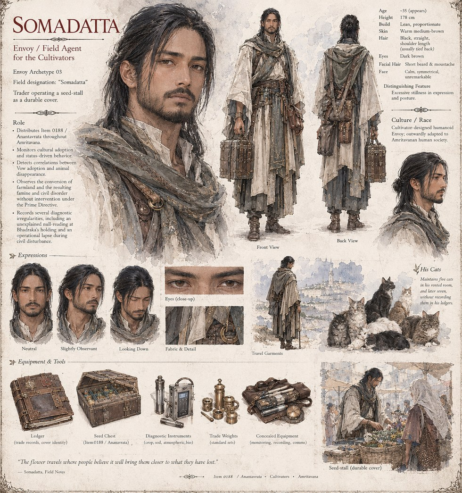

Somadatta
Envoy of the Cultivators · Envoy Archetype 03 · the Trader
Envoy Archetype 03, working Case 0188 under cover as a traveling seed-trader. Somadatta is the one who carries the flower out of the palace grounds and into the capital's wedding markets, and the one who watches — over years, then decades — as an emperor's private grief becomes a marriage custom, then agricultural policy, then a famine. His own field notes record the conversions, the refusals, and the slow disappearance of household cats with the same even hand.
In the small rented room above his seed-stall, Somadatta keeps cats — five, then seven, by the case's fourth year — taken in from families who gave them up for the Vow. It is the one part of the file that isn't, strictly, part of the case. See the Cultivator entry for how his cover compares to other Envoys on file.
“The flower travels where people believe it will bring them closer to what they have lost.”
Appears in The Songs Never Mention the Cats